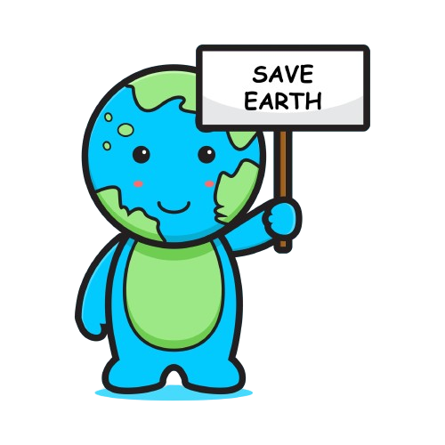
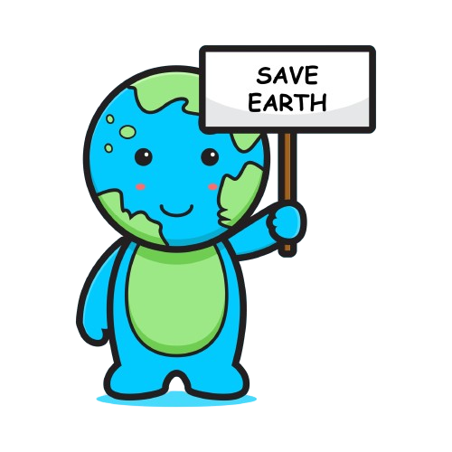

Question: Quel gaz a l'effet de serre le plus puissant ?
Réponse: Vapeur d'eau
Question: Où va la majorité du CO2 émis par l’Homme ?
Réponse: Dans l'atmosphère
Question: En hiver et à quantité égale, lequel de ces aliments émet le plus de CO2 ?
Réponse:Tomates d'Espagne
Question: Aux États-Unis, la qualité de l'air est-elle meilleure ou moins bonne qu'il y a 20 ans ?
Réponse: Meilleure
Question: Quand le GIEC a-t-il assuré que le réchauffement climatique était d’origine humaine ?
Réponse: En 2007, s’appuyant sur la multiplication des phénomènes climatiques extrêmes
Question: La production d'énergie est notre source principale d'émissions de CO2. Quelle est la seconde ?
Réponse: La déforestation
Question: En matière de transport, quelle action aurait le plus d’impact ?
Réponse: Améliorer l’efficience des avions
Question: Quelle action diminuerait le plus nos émissions de gaz à effet de serre ?
Réponse:Fermer les centrales à énergie carbonée
Question: Où auront lieu les premiers impacts majeurs du changement climatique ?
Réponse: Sur les latitudes nord
Question: Quelle action me permettrait de diminuer le plus mon empreinte carbone ?
Réponse: Baisser de 1°C la consigne de chauffage
Question: Le dérèglement climatique est-il causé par l’activité humaine ?
Réponse: Oui, Pour le GIEC, « l’influence de l’homme sur le système climatique est clairement établie »
Question: L’acidification des océans est-elle causée par le réchauffement climatique ?
Réponse: Oui, Comme l’explique l’Organisation météorologique mondiale (OMM), les océans absorbent environ un quart des émissions de CO2 liées à l’activité humaine.
Question: La couche d’ozone et le réchauffement climatique, est-ce la même chose ?
Réponse: Non, la couche d’ozone absorbe les rayonnements ultraviolets émis par le soleil. Les trous qu’on y observe sont causés par les émissions de gaz industriel.
Question: Quelle quantité d'eau est nécessaire pour augmenter le niveau de la mer d'un millimètre, selon la NASA ?
Réponse: 365 gigatonnes
Question: Combien d'espèces sont gravement menacées par le changement climatique, selon les Nations Unies ?
Réponse: 1 million d'espèces
Question: Quelle est la proportion des émissions de carbone émises par les 20 pays les plus riches par rapport à l'ensemble des émissions mondiales ?
Réponse: 80 %
Question: Quel montant d'investissement dans l'adaptation au climat permettrait d'éviter 7,1 billions de dollars d'impacts climatiques ?
Réponse: 1,8 billion de dollars
Question: Qu’est-ce que le réchauffement climatique ?
Réponse: Ensemble de phénomènes qui entraîne un réchauffement de la planète ainsi que des changements climatiques
Question:Pourquoi la terre se réchauffe-t-elle ?
Réponse: A cause de l’accroissement de l’effet de serre
Question: Comment les modèles informatiques prévoient-ils le climat ?
Réponse: En utilisant des équations mathématiques basées sur les interactions entre l'atmosphère, les océans, les calottes glaciaires, les rivières et les écosystèmes.
Question:Quelles sont les conséquences du changement climatique ?
Réponse:Une augmentation du niveau de la mer et des risques d'inondations.
Question: Quelle action devrait être entreprise pour éviter le pire du changement climatique ?
Réponse: Réduire drastiquement les émissions de gaz à effet de serre et les éliminer totalement d'ici 2100.
Question: Quel rôle joue l’effet de serre sur la Terre?
Répondre: Il rend propice le développement de la vie sur la Terre, car il garde la température de l’air suffisamment élevée.
Question : Quelle est la principale cause du réchauffement du climat de la planète?
Répondre : L’augmentation des quantités de gaz à effet de serre (GES).
Question : Quelle serait la température de la Terre sans atmosphère ?
Répondre : - 18°C
Question : Le climat de la planète a-t-il changé au cours du 20e siècle?
Répondre : Oui, la température de l’air à la surface de la planète s’est élevée.
Question : Quelle est la proportion d’eau douce sur Terre comparativement à l’eau salée?.
Répondre : 97,5 % d’eau salée contre 2,5 % d’eau douce.
Question : Quelle est la superficie des glaces de l’Antarctique?
Répondre : 14 000 000 km2.

 
